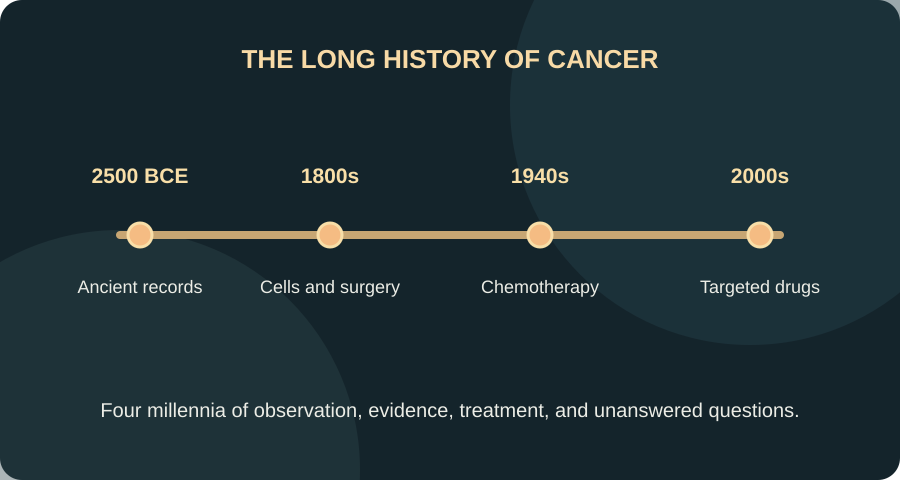
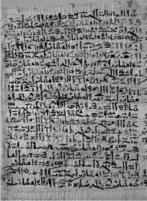

1. Is cancer really a modern disease?
We frequently imagine cancer as an illness produced by modern civilization: factories, cities, pollution, industrial growth, and stressful lives. Mukherjee begins this chapter by questioning that assumption. Cancer certainly has a modern image. It seems to represent relentless production and expansion—the very qualities that define many modern societies. But that does not mean cancer itself is new.
The chapter compares cancer with tuberculosis, another disease that dominated the cultural imagination of an earlier age. In nineteenth-century literature, tuberculosis was sometimes associated with frailty, sensitivity, and tragic romanticism. Cancer carries a different set of images: invasion, uncontrolled multiplication, colonization, and rebellion against the body's rules. These metaphors tell us something about the era using them, not only about the biology of the illness.
Mukherjee insists that a proper biography of cancer must begin by asking two historical questions: How old is it? And when did people first recognize it?
2. Cancer is made from our own biology
Before traveling into the past, the author explains why cancer is so haunting. It is not an entirely foreign creature. Its cells originate from our own cells and use the same basic ability to grow and divide. Healthy tissues divide under carefully controlled conditions. Cancerous cells escape some of these controls and produce generation after generation of descendants.
Cancer usually develops from one ancestral cell that accumulates changes that support malignant growth. Biologists call the resulting descendants a clone. But the clone does not remain perfectly identical. As cells divide, new variations can arise. Some variants survive treatment or immune attack better than others. Those surviving populations can become dominant.
This makes cancer a clonally evolving disease. It follows a version of Darwinian selection inside the body: variation appears, external pressures favor some variants, and the survivors multiply. That helps explain why a cancer can come back after treatment and why the disease can behave differently over time.
| Ordinary healthy growth | Cancerous growth |
|---|---|
| Division responds to the body's signals | Division can become poorly controlled |
| Cells work as part of organized tissue | Malignant cells can invade normal tissue |
| Damaged cells may stop dividing or die | Some abnormal cells survive despite damage |
| Growth usually benefits the organism | Growth may benefit the cancer at the host's expense |
3. The Edwin Smith Papyrus: Ancient Egyptian evidence
In 1862, a dealer and self-taught Egyptologist named Edwin Smith acquired a damaged Egyptian papyrus. The manuscript, later translated in 1930, contained medical observations that may have copied traditions going back to roughly 2500 BCE. Mukherjee associates the material with the teachings of Imhotep, an ancient Egyptian figure celebrated for medicine, architecture, and learning.
What makes the papyrus remarkable is its practical manner. Rather than attributing every injury to magic, it describes conditions such as fractures and wounds through examination, diagnosis, and prognosis. Case 45 concerns hard masses in the breast: cool, dense swellings spreading beneath the skin. The description is strikingly compatible with what a modern physician might recognize as breast cancer.
The most unsettling part is the treatment entry. Unlike many other cases in the document, it offers no treatment. We cannot establish with absolute certainty that the ancient description matches a particular modern cancer diagnosis. Yet it shows that physicians long ago observed breast masses that they could not cure.

4. Atossa: Cancer enters Persian history
The Greek historian Herodotus recounts a story about Atossa, a queen of Persia who lived more than two thousand years ago. She developed a swelling in her breast that became an intensely private source of suffering. Rather than summon doctors from across the empire, she concealed her condition. Mukherjee describes her illness as potentially compatible with an aggressive breast cancer, although the exact modern diagnosis cannot be established from the account.
Eventually, Democedes, a Greek physician in Persian captivity, persuaded Atossa to permit treatment that involved removing the affected tissue. The story suggests that the intervention gave her some relief. We do not know what happened to the disease afterward or what ultimately caused her death.
Herodotus then links Atossa and Democedes to a change in Persian imperial ambitions toward Greece. Mukherjee uses this account to show that a seemingly private illness can leave fingerprints on public history. The queen's suffering was hidden, but its consequences may have extended far beyond her chamber.
5. The problem with ancient stories
Mukherjee cautions against treating every ancient description of a lump as certain proof of cancer. Without a biopsy or preserved tissue, a historical writer might have been describing an abscess, wart, ulcer, benign growth, or another condition. A modern diagnosis made from a few sentences in a centuries-old text is always uncertain.
For stronger evidence, researchers need surviving human remains that can be examined directly. That leads the narrative away from Egypt and Persia to a dry region of southern Peru, where ancient bodies were naturally preserved by the climate.
6. A thousand-year-old cancer in a Peruvian mummy
In 1990, paleopathologist Arthur Aufderheide investigated graves of the Chiribaya people near the Atacama Desert. The remarkable dryness had preserved many bodies even though the people had not deliberately embalmed them. Aufderheide studied approximately 140 remains and discovered a hard mass in the upper arm of a woman who had died around her mid-thirties.
The mass showed evidence consistent with an osteosarcoma, a malignant bone tumor. Because bone and calcified tissue may remain recognizable for centuries, some ancient cancers are easier to detect than others. Mukherjee describes the find as direct, physical evidence of cancer existing around a thousand years ago.
Imagine the woman's experience: an increasingly painful swelling in an arm, without access to modern imaging, surgery, or cancer medicines. The disease's cellular mechanisms may have been ancient even though the vocabulary and treatments used to describe it are modern.
7. Other traces of ancient malignancy
Researchers have also found evidence of tumors or tumor-like changes in other mummies and skeletal remains. Some lesions have been interpreted as possible bone tumors or traces of metastatic cancer. But the evidence must be evaluated carefully. Bones survive much more readily than soft tissues, and different diseases can leave similar marks.
Mukherjee therefore draws a balanced conclusion. Cancer is definitely not merely a twentieth-century invention, but ancient evidence is patchy and often difficult to interpret. The absence of written accounts or preserved tumors does not prove that cancer was absent.
8. Why is cancer so rare in ancient records?
One of the chapter's most useful explanations concerns age. Cancer risk generally increases as people get older, partly because the mutations and biological changes associated with many cancers accumulate over time. In ancient populations, large numbers of people died from infections, childbirth-related complications, malnutrition, injury, and other causes before reaching the ages at which many cancers become common.
Mukherjee gives a striking contrast in age-related breast cancer risk to illustrate how strongly risk can change across the lifespan. When more people survive into later decades, more will live long enough to develop cancer. Thus, improved survival from other diseases helps bring cancer into view.
The author describes this as a kind of double negative: cancer becomes more prominent when other causes of early death are reduced. Modern civilization did not create cancer out of nothing; by extending life, it made an ancient biological vulnerability more visible.

9. Better diagnosis also changes the statistics
Another reason cancer seems increasingly common is that medicine has become better at finding and recording it. A nineteenth-century patient with leukemia might have been diagnosed as having infection, blood poisoning, or mysterious weakness. Before modern imaging and pathological examination, a tumor deep inside the body might never have been correctly identified.
Techniques such as biopsy, autopsy, X-rays, and mammography increased the ability to recognize malignancy. Detecting a tumor earlier can raise the recorded number of cancer diagnoses even if some underlying biological risks have not changed as much. This creates a distinction between the true occurrence of disease and the number of cases medicine manages to detect.
10. Modern life really can change which cancers occur
The author does not argue that modern behavior has no effect on cancer. Some exposures clearly change risk. He points to the twentieth-century increase in lung cancer associated with cigarette smoking. At the same time, some cancers have declined. Rates of stomach cancer changed with food storage practices, sanitation, and infections, including infections later linked to gastric cancer.
The crucial distinction is between claiming that modern life invented cancer and recognizing that specific environments and habits alter the pattern of an ancient disease. Longevity, better diagnosis, and changes in exposure all contribute to the historical picture, but in different ways.
11. What the chapter's title means
“A Private Plague” points to cancer's paradoxical position. It was long familiar to individual sufferers but comparatively hidden in public history. Ancient patients often faced their illness silently. Unlike explosive epidemics, a cancer usually developed within one person and did not announce itself by sweeping through a city. Its suffering could be intense even while the disease remained historically invisible.
The title also connects with the author's decision to call the book a biography. Cancer is portrayed as a changing adversary that exploits the machinery of the body, mutates, adapts, and survives. The metaphor is useful, but remember that cancer is not literally a thinking opponent. Its apparent cleverness emerges from biological variation and selection.
12. The deeper meaning of Chapter 4
A disease can be ancient even when its social importance is modern. Surviving Egyptian descriptions, Persian stories, and archaeological evidence show how long humans have confronted malignant growth. Absence of evidence is not evidence of absence. Ancient records are incomplete, and many tumors leave little trace in bodies that decay.
Cancer's frequency is partly a story about human survival. Living longer gives cancer more opportunity to appear. Biology and metaphor must be kept distinct. Images of invasion and rebellion help us imagine the illness, but the mechanisms involve cells, mutations, and selection rather than intention.
Chapter takeaway: Cancer did not begin in the modern world. What changed was the length of human life, the ability to diagnose disease, and the exposures shaping which cancers became common. Behind today's frightening statistics lies an illness with an ancient history.